RUIYU GOU, Epic Games, Canada MICHIEL VAN DE PANNE, University of British Columbia, Canada
DANIEL HOLDEN, Epic Games, Canada

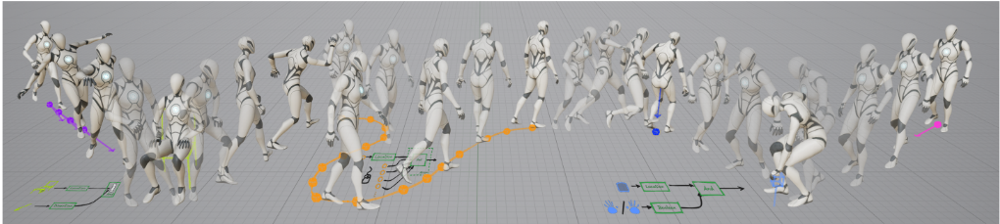
Neural-network-based character controllers are increasingly common and capable. However, the integration of desired control inputs such as joystick movement, motion paths, and objects in the environment, remains challenging. This is because these inputs often require custom feature engineering, specific neural network architectures, and training procedures. This renders these methods largely inaccessible to non-technical designers. To address this challenge, we introduce Control Operators, a powerful and flexible framework for specifying the control mechanisms of interactive character controllers. By breaking down the control problem into a set of simple operators, each with a semantic meaning for designers, and a corresponding neural network structure, we allow non-technical users to design control mechanisms in a way that is intuitive and can be composed together to train models that have multiple skills and control modes. We demonstrate their potential with two current state-of-the-art interactive character controllers - a Flow-Matching-based auto-regressive model, and a variation of Learned Motion Matching. We validate the approach via a user study wherein industry practitioners with varying degrees of ML and technical expertise explore the use of our system.
CCS Concepts: · Computing methodologies → Motion capture.
Additional KeyWords and Phrases: Interactive Animation, Video Games, Motion Matching, Generative Models, Flow Matching, Neural Networks, Character Animation, Animation,
Authors' Contact Information: Ruiyu Gou, Epic Games, Vancouver, Canada, ruiyu. gou@epicgames.com; Michiel van de Panne, University of British Columbia, Vancouver, Canada, van@cs.ubc.ca; Daniel Holden, Epic Games, Montreal, Canada, daniel.holden@ epicgames.com.
Permission to make digital or hard copies of all or part of this work for personal or classroom use is granted without fee provided that copies are not made or distributed for profit or commercial advantage and that copies bear this notice and the full citation on the first page. Copyrights for components of this work owned by others than the author(s) must be honored. Abstracting with credit is permitted. To copy otherwise, or republish, to post on servers or to redistribute to lists, requires prior specific permission and/or a fee. Request permissions from permissions@acm.org.
© 2025 Copyright held by the owner/author(s). Publication rights licensed to ACM. ACM 1557-7368/2025/12-ART231
https://doi.org/10.1145/3763319
ACM Reference Format:
Ruiyu Gou, Michiel van de Panne, and Daniel Holden. 2025. Control Operators for Interactive Character Animation. ACM Trans. Graph. 44, 6, Article 231 (December 2025), 20 pages. https://doi.org/10.1145/3763319
1 Introduction
Neural-network-based methods of character animation and interactive control have become the standard in academia over the last seven or eight years, and have made significant inroads into the industry [Bocquelet et al. 2022; Büttner 2019; Cascadeur 2023; Holden et al. 2020; Kleanthous and Martini 2023; Oreshkin et al. 2024; Ryan Cardinal 2022; Zinno 2019]. These models show promise in their ability to consume large datasets, learn from unstructured or relatively unprocessed motion capture data, and produce compact and fast to evaluate models that can output natural looking animation.
The bulk of research focusing on real-time, interactive control makes use of standard video game control mechanisms such as the gamepad, mouse, and keyboard [Holden et al. 2020], or VR trackers and headsets [Lee et al. 2023; Starke et al. 2024]. Inputs from these devices are then typically mapped to inputs of the neural network, which is used to dynamically generate the character's animation frame by frame.
This is usually not a direct mapping, however, and the development of good control mechanisms for neural-network-based character animation is non-trivial. In addition to simple post-processing of hardware signals, e.g., dead-zone elimination on the gamepad, better results are generally achieved via further feature engineering, such as constructing a predicted future trajectory of the character [Zhang et al. 2018], or blending user controls with estimations of the most likely controls according to the current state of the character or other characters [Starke et al. 2021]. As well as user inputs, information about the virtual world may be additionally provided to give more context to the network, such as information about the current state of the character, occupancy information [Starke et al. 2019], 2D heightmaps [Peng et al. 2017], or the positions, orientations, or phases of virtual object [Starke et al. 2020]. Finally, video game AI systems may also provide inputs to character controllers - such as providing paths to follow or actions to take at certain locations.
A key difficulty with the diverse variety of potential control inputs is that the control design may also influence the design of the neural network structure that consumes it. For example, 2D heightmaps may be processed via convolution. It may also change the training methodology, introducing additional losses or additional pre-processing steps. This coupling between network structure, training methodology, and control design makes it very difficult for non-technical designers, animators, and other users to design new neural-network-based character controllers without Machine Learning expertise, which so often limits state-of-the-art models to the single bespoke behaviors they have been designed for.
To begin to address this challenge, we introduce Control Operators. Control Operators provide non-technical users a way of specifying and designing interactive character controllers in a way which is familiar to them as game designers. Rather than building their neural-network-based character controller holistically, they can instead construct it by composing simple operators that resemble the logical and semantic operations they might want. Once a user has described the input controls they wish to provide to the network, the network structure is generated automatically. Then, they must describe how the controls are given in the training data, and, once trained, they must describe how these variables are provided at runtime. Once they have performed these three steps, their controller is ready to be used.
To demonstrate and evaluate Control Operators, we implement them in Unreal Engine's Blueprint Visual Scripting Language [Unreal 2022b]. Our framework is controller-agnostic: we showcase it on two current state-of-the-art character controllers - a segment-based variation of Learned Motion Matching and a Flow-Matching-based auto-regressive model. The former adapts the existing approach of Holden et al. [2020] and the latter introduces a new use of Flow Matching in the interactive animation setting. Finally, we conduct a user study to evaluate the degree to which our implementation allows non-technical users to build machine-learning-based character controllers. We provide a simplified Python reference implementation, see https://github.com/gouruiyu/ControlOperators.
2 RelatedWork
In this section we discuss previous work related to our research including previous work on interactive character controllers, diffusion and Flow Matching models applied to character animation, and alternative control frameworks for interactive character animation.
2.1 Interactive Character Controllers
Building interactive character controllers has been a long-standing problem in computer graphics and animation. Early work made use of animation blending [Park et al. 2002; Rose et al. 1998], often as part of a Motion Graph which dictated the overall logic and state transitions of the character [Heck and Gleicher 2007; Kovar et al. 2002; Lee et al. 2002; Min and Chai 2012; Safonova and Hodgins 2007; Shin and Oh 2006]. This approach, however, is not easy to scale as it requires short, specific, time-aligned animation clips. Researchers have therefore looked towards statistical methods that could more easily learn from unprocessed motion capture data.
Early Machine Learning methods in this domain made use of linear or kernel-based methods [Lee et al. 2010; Levine et al. 2012; Treuille et al. 2007; Wang et al. 2008]. Unfortunately, linear models have limited expressiveness and kernel-based models have poor computation complexity with respect to the size of the training data set. While the development of neural networks allowed for training on large datasets of raw motion capture data, early attempts at building interactive controllers using them proved difficult, as the additional data also amplified the ambiguity issue - that having multiple animations corresponding to the same control signal would cause the prediction to tend towards the mean, causing a "dying-out" effect [Fragkiadaki et al. 2015; Martinez et al. 2017].
One of the early attempts at solving this issue was presented by Holden et al. [2017]. This work introduced Phase-Functioned Neural Networks, which factored out the phase in the neural network structure, greatly reducing the ambiguity in the regression. This phase-based approach was further extended and generalized to quadruped motions [Zhang et al. 2018], environmental interactions [Starke et al. 2019], basketball [Starke et al. 2020], character interactions [Starke et al. 2021], dancing [Starke et al. 2022], and more [Li et al. 2024]. Meanwhile, other machine learning methods have also been used to tackle the ambiguity problem, including longer-term auto-regressive models using memory [Park et al. 2019; Pavllo et al. 2019, 2018], normalizing-flows [Henter et al. 2019; VallePérez et al. 2021], adversarial networks [Li et al. 2022; Wang et al. 2021], Variational Auto-Encoders [Ling et al. 2020; Yao et al. 2022], and vector quantization [Yao et al. 2024].
In the games industry, Motion Matching [Büttner and Clavet 2015; Clavet 2016; Holden 2018; Holden et al. 2020; Kleanthous and Martini 2023] is a popular solution, which solves the ambiguity issue by selecting the nearest neighbor in the dataset [Li et al. 2023a; Starke et al. 2024]. Finally, and most recently, diffusion models have been used [Chen et al. 2024b; Shi et al. 2024; Zhang et al. 2023a] as they present an elegant solution to the multi-modality problem and allow for easy sampling of the conditional probability distribution of the next frame given the previous frame (and the provided controls) without tending toward the average.
While all of these solutions have made real progress towards resolving the ambiguity issue, many existing neural-network-based interactive character controllers are only capable of performing single behaviors (or require separate networks per-behavior), often with bespoke designs for specific tasks such as locomotion [Ling et al. 2020], basketball [Liu and Hodgins 2018; Starke et al. 2020], martial arts [Starke et al. 2021], tennis [Zhang et al. 2023b], skateboarding [Liu and Hodgins 2017], soccer [Hong et al. 2019], climbing [Naderi et al. 2017], and dance [Alexanderson et al. 2023; Tan et al. 2023; Valle-Pérez et al. 2021]. We hypothesize that this is due to two issues: 1) the feature engineering required by most control tasks, and 2) the lack of composability inherent in most methods of conditioning. Control Operators attempt to solve this by breaking the control problem down into individual composable and re-usable parts that allow a model to learn multiple behaviors in a single network.
2.2 Diffusion and Flow-Matching Models
Improvements in sequence-to-sequence modeling [Vaswani et al. 2017], the success of text-conditioned image generation, and the development of large language models, have led to a growing body of work focused on text-based animation generation [Zhu et al. 2023a]. Text-based conditioning is accessible and easy-to-control even for novice users, but generally targets offline generation. Due to the requirement of large databases of annotated motion capture data, these methods have mostly made use of the AMASS [Mahmood et al. 2019] or HumanML3D [Guo et al. 2022] datasets, and SMPL body model [Loper et al. 2015]. For interactive applications such as video games, where precision and responsiveness are important, controlling a virtual character via typing in text commands is often not appropriate, and text-based conditioning remains largely unproven for in-game use.
Significant advances have also been seen in multi-modal generative models, including models based on diffusion [Ho et al. 2020; Song et al. 2021] and FlowMatching [Lipman et al. 2023]. In particular, diffusion and Flow Matching present elegant solutions to the problem of multi-modal generation and the ambiguity issue. Therefore, diffusion-based generative models [Ho et al. 2020] have recently been widely used for animation synthesis, modeling space-time motions [Cohan et al. 2024; Sun et al. 2024; Tevet et al. 2023; Zhang et al. 2022] or used in auto-regressive motion generation [Chen et al. 2024b; Li et al. 2023b; Shi et al. 2024; Zhang et al. 2023a; Zhao et al. 2024].
One limitation of traditional diffusion models [Ho et al. 2020] is that they rely on many (potentially thousands) of denoising steps, making them less amenable to interactive applications. To alleviate this limitation, various works have focused on reducing the required sampling steps through fast-sampling methods such as Denoising Diffusion Implicit Models (DDIM) [Song et al. 2021], consistency distillation [Dai et al. 2024], or training and sampling in lowerdimensional latent spaces [Chen et al. 2023; Zhao et al. 2024]. Flow Matching [Lipman et al. 2023] (alternatively formulated as iterative 𝛼-(de)Blending [Heitz et al. 2023]) provides a simpler formulation of diffusion that retains the key principle of gradually transforming noise into samples from a target data distribution. Flow Matching learns a continuous trajectory from noise to the target data distribution, enabling comparably high-quality generation with far fewer inference steps, similar to DDIM.
We incorporate these principles by employing a latent autoregressive Flow Matching model as one of our example controllers. By using Flow Matching in a compact latent pose space instead of stochastic diffusion in the full pose space, and using an MLP-based network that predicts a single pose at a time [Shi et al. 2024], we can run inference in just a few (typically 4) steps. Further distillation [Frans et al. 2024; Liu et al. 2022] can be applied to allow for inference using as little as one step.
Existing work on conditioning motion diffusion models uses similar methods to other domains such as image synthesis, focusing on text-based prompts [Tevet et al. 2023], leveraging large-scale pretrained encoders such as CLIP [Radford et al. 2021]. Recent work has also explored conditioning on audio and speech for gesture generation [Ao et al. 2023], and music for dance generation [Alexanderson et al. 2023]. However, these approaches do not provide real-time user control, which is essential for interactive applications such as video games. By training a hierarchical reinforcement learning controller, AMDM [Shi et al. 2024] demonstrates control such as moving to a target, moving at a given speed with an orientation from the joystick, and path following. We show that our Flow Matching model can instead be directly conditioned on encoded control signals processed by Control Operators rather than relying on a policy network, and is therefore capable of performing a wider-range of tasks using a single network.
2.3 Control Frameworks
Previous research which focuses on enabling virtual characters to perform multiple tasks or behaviors broadly falls into two different approaches: 1) the specification of tasks via objective functions which are then either optimized for, or an optimal policy learned via reinforcement learning. 2) a story-boarding-like approach where the structure of the desired animation is described in formal or natural language from which the animation is generated [Qing et al. 2023].
The specification of tasks via objective functions has long been a tradition in robotics, kinematic, and physically-based animation [Heess et al. 2017; Nonami et al. 2014; Peng and van de Panne 2017]. In graphics, multiple works make use of a fundamental motion model which is then fine-tuned on multiple different tasks and objective functions [Cho et al. 2021; Dou et al. 2023; Ling et al. 2020; Luo et al. 2020; Merel et al. 2020; Peng et al. 2017, 2021; Tessler et al. 2024, 2023; Xu et al. 2023a,b; Zhu et al. 2023b]. However, although these approaches re-use a basic motion model, typically separate policies need to be trained per-task each with individual encoders and feature engineering required for the relevant control variables. In particular, multi-task learning in a single policy is challenging for reinforcement learning due to the nature of the Value Function having to approximate an expectation of future discounted rewards, which does not lend itself naturally to decomposition [Sun et al. 2022]. In contrast, our method uses supervised learning with control variables present in the training data, and so can more easily combine multiple tasks and control variables into a single network.
Other works have tried to approach the problem of multi-task animation generation from a planning perspective. Agrawal et al. [2016] present a controller that converts a high-level description of a task into a foot-step plan to be executed by a low-level motion controller. Most similar to our method are Hyun et al. [2016] and Lee et al. [2018]. In the former, a task is described as a sentence in a formal motion grammar, where tokens may include additional control variables such as timings and speeds. In Lee et al. [2018], sparsely annotated motion capture data is further augmented using motion grammars and Laplacian motion editing to generate additional synthetic training data, in support of training a recurrent neural network (RNN) that can be conditioned to perform multiple different tasks. Our method is loosely inspired by motion grammars - we also embrace the idea of users specifying their desired control in the form of a formal language with continuous control variables embedded, but extend this idea to include the association of specific neural network operators that allows for training on supervised control signals directly.
3 Control Operators
We now present the core concepts involved in Control Operators, define the equations associated with the operators required by our method, present several other interesting and useful operators, many of which can be derived from others, and discuss the user workflow, as well as some of the implementation details of our integration in Unreal Engine's Blueprint Visual Scripting Language.
3.1 Overview
A visual overview of the Control Operators framework is given in Fig 2. Control Operators provide a way of encoding control input coming from other systems, such as the player input or AI systems, which may provide data which is not uniform in structure or in a consistent format across frames. These control inputs may correspond to multiple different tasks or styles of control, and may contain missing values or variable amounts of information. For example, an AI system may provide a target path for the character to follow consisting of a variable number of way-points, while at other times it may provide only a target position and facing direction for the character to reach. In certain cases this may include a style for the locomotion, or a gait, or a time of arrival, or it may not.
The goal of Control Operators is to automatically map this kind of semantic description of the input structure onto meaningful neural network primitives in a way that allows users with no knowledge of neural networks to formally describe the format in which the control input data is going to be provided. The encoding of that data itself is then handled automatically.
In our implementation, the overall user workflow includes three steps: (1) specifying the Control Schema which defines all possible structures of control inputs, (2) associating control variables to training data via Training Controls, and (3) defining Runtime Controls to map runtime gameplay inputs at inference time, as illustrated in Fig 3. We implement these steps all in the form of user-constructed Blueprint Graphs. Details on them can be found in Section 3.5.
3.2 Basic Operators
Operators can be seen as functions with trainable parameters which take one or more variables as input and produce a single control vector with a fixed dimensionality as output. The core operators used by our method are as follows:
3.2.1 Null. We can give an explicit name to the null control operator which produces an empty vector as output. This operator can be useful for uncontrolled generation (see Section 5.1) and as a component of other operators.

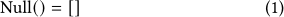
3.2.2 Typed Operators. We can also define operators which take as input variables of different types and encode those variables as control vectors with fixed dimensionality in a way which is appropriate for neural networks:

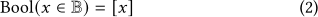

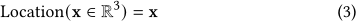

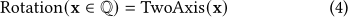

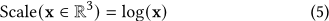

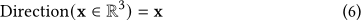

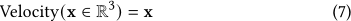

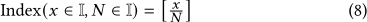
For example, in the above, TwoAxis performs quaternion to twoaxis conversion [Zhang et al. 2018; Zhou et al. 2018], log transforms scales into the log-space, while we can encode an integer index as a control vector using a position encoding. Any position encoding is possible here [Dufter et al. 2021], but one very simple option is to simply divide the index 𝑥 by a user-specified maximum 𝑁 .
These abstractions are important for users who may not have the expert knowledge to design appropriate transformations for specific variable types themselves.
3.2.3 Encode. We can allow users to add an additional layer of encoding to a control vector at any point they wish. This can be achieved by defining an operator which passes the input control vector through a linear layer with a user provided output dimensionality and activation function 𝜎.

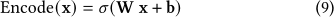
3.2.4 And. Users can combine multiple controls using the And operator. This operator takes as input a predefined set of 𝑁 control vectors of different dimensionalities, and outputs their concatenation, denoted by ∥, as output.

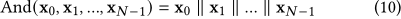
3.2.5 Or. We allow users to provide a single control from a set of controls using the Or operator. This operator takes as input a single control vector from a predefined set of 𝑁 control vectors of different dimensionalities, along with the associated index 𝑖 from that set. It then encodes this to an output control vector of a fixed dimensionality using an associated weight matrix W𝑖 ∈ R𝑑𝑜×𝑑𝑖 and bias b𝑖 ∈ R𝑑𝑜 where 𝑑𝑖 is the dimensionality of the input control vector 𝑖 and 𝑑𝑜 is the fixed output dimensionality. Finally, it concatenates a one-hot encoding of the choice OneHot(𝑖, 𝑁).

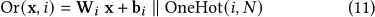
3.2.6 Set. To encode a variable number of control vectors we use the Set operator. This takes a variable-sized set of 𝑀 (from a maximum of 𝑁) input control vectors of a uniform, predefined dimensionality (representing the same control type), and encodes these inputs using multi-headed self-attention, before concatenating an encoding of the number of inputs provided as Count(𝑀, 𝑁), e.g., Count(3, 5) = [1 1 1 0 0].

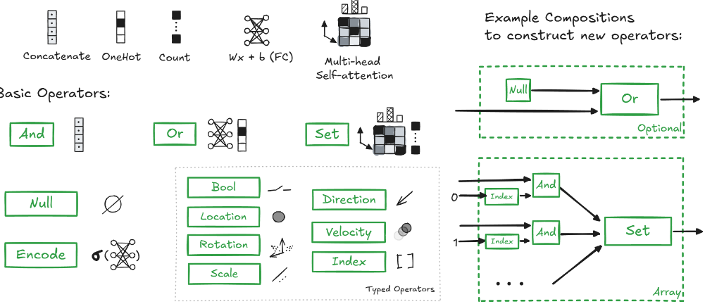

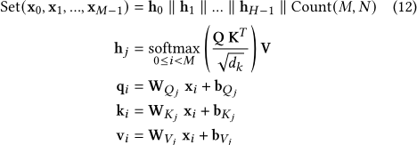
Here, W𝑄𝑗 ∈ R𝑑𝑘×𝑑𝑖 , b𝑄𝑗 ∈ R𝑑𝑘 , W𝐾𝑗 ∈ R𝑑𝑘×𝑑𝑖 , b𝐾𝑗 ∈ R𝑑𝑘 , W𝑉𝑗 ∈ R𝑑𝑜×𝑑𝑖 , b𝑉𝑗 ∈ R𝑑𝑜 where 𝑑𝑖 is the dimensionality of the input control vectors, 𝑑𝑘 is the dimensionality of the query vector, 𝑑𝑜 is the fixed output dimensionality for a single head 𝑗 , and 𝐻 is the user-provided number of heads.
3.3 Additional Operators
Next, we give some representative examples of further useful operators that can be defined or derived from the basic set. While just a few are given here, it should be clear that many more operators or formulations are possible, e.g., Convolutional Operators that process spatial grids.
3.3.1 Composite Types. Typed operators can be combined to build operators encoding more complex object types, such as Transforms:

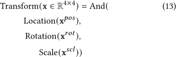
By further composing typed operators in this way it is possible to provide a library of pre-defined operators to users which they can use to encode the state of complex objects in the scene such as whole characters or props.
3.3.2 Fixed Array. We can encode a fixed-size array of 𝑁 controls using the And operator on each element. This can be seen as a nonvariadic version of the And operator, which is a useful abstraction in certain contexts.

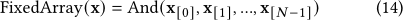
3.3.3 Optional. When a control may-or-may-not be provided it can be defined as an Or between that control and the empty vector (a.k.a. the Null operator).

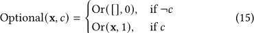
In this case, the use of the empty vector will cause the following linear transformation to output only the learnable bias.
3.3.4 Either. Similarly, we can define a convenient version of Or for when only two options are possible.

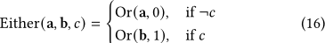
3.3.5 Inclusive Or. The Inclusive Or operator takes 𝑀 control vectors as input from a fixed, predefined set of 𝑁 control vectors of different dimensionalities. The indices of the controls from the set which are provided are given by i ∈ I𝑀 .
InclusiveOr(x0, x1, ..., x𝑀-1, i) = And(y𝑖 , y𝑖+1, ..., y𝑁 ) (17)

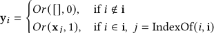
3.3.6 Array. We can encode a variable-sized array of 𝑀 controls (from a maximum of 𝑁 ) using the Set operator in combination with the Index operator, I(𝑖) = Index(𝑖, 𝑁):

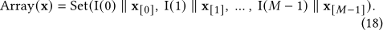
3.3.7 Dictionary. Similarly, we can encode a Dictionary of controls using the Set operator on the concatenation of the corresponding keys k and values v:

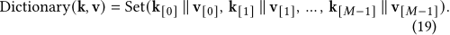
3.4 Control Encoder Networks
The final Control Encoder Network for a specific behavior can be defined as a composition of operators. In this section we give two examples. For illustrations of all the Control Encoder Networks shown in the results please see Fig 17.
3.4.1 Move to Target. The Control Encoder Network for the Move To Target behavior (see Section 5.3), C𝑚𝑜𝑣𝑒 = MoveToTarget, can be defined as follows:

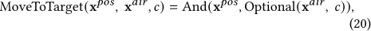
where x𝑝𝑜𝑠 ∈ R 3 is the target position, x𝑑𝑖𝑟 ∈ R 3 is an optional target facing direction, and 𝑐 ∈ B is a boolean to indicate if the facing direction should be considered.
3.4.2 Trajectory Following. The Control Encoder Network for the Trajectory Following behavior (see Section 5.2), C𝑡𝑟𝑎 𝑗 = TrajectoryFollow, can be defined as follows:

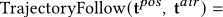

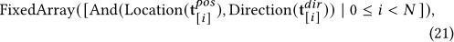
where t𝑝𝑜𝑠 ∈ R𝑁×3 is an array of future trajectory positions, and t𝑑𝑖𝑟 ∈ R𝑁×3 is an array of future trajectory directions.
3.5 Implementation and User Workflow
While the equations defining Control Operators are relatively simple, implementing the framework in a way which is accessible to non-technical users requires some consideration with respect to user workflow. We introduced the workflow briefly in Section 3.1; here, we describe each step in detail within the context of example operators and the Control Encoder Network.
First, to allow for the pre-allocation of all the required buffers and trainable parameters it is important to have a Control Schema which describes all the possible structures of the controls which are going to be provided as input to the controller (e.g. what are all the potential possible inputs to an Or operator). Specifying this Control Schema using a Blueprint Graph is therefore the first step for users in our implementation and allows our system to create the Control Encoder Network without knowing exactly how it is going to be linked to the training data or runtime variables.

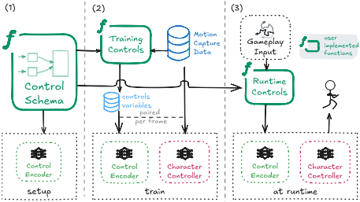

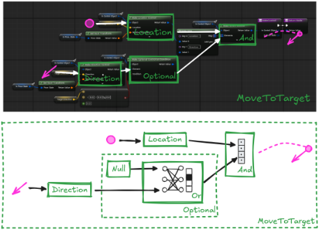
Once this step is complete, users then build another Blueprint Graph that specifies the Training Controls, i.e. the one-or-more control variables associated with each frame of animation in the training data. Using this graph our system can gather pairs of input controls and corresponding frames of animation, and at this point the controller is ready to be trained by the user.
In the final step, users specify the Runtime Controls, again as a Blueprint Graph. This graph defines how the control variables are constructed at runtime from any relevant gameplay variables. This is used every frame to gather the input variables from the gameplay state and prepare them as input for the Control Encoder Network. For a visual illustration of how this step maps to the visual language of Control Operators used in the paper please see Fig 4.
For example screenshots of all the Blueprint Graphs used in these three steps please see Fig 15.
When mapping Control Operators to Blueprint Graph Nodes, we found it more user-friendly and less bug-prone to use named arguments rather than positional arguments for the variadic operators such as And, Or, and Inclusive Or. Users therefore also provide argument names instead of indices when describing choices (i.e. the name of the argument(s) instead of the index 𝑖 in Or and i in Inclusive Or). Additionally, we found there was often some confusion about the logic-oriented naming of the operators, so in our implementation we use a more structure-oriented naming scheme, where (for example), And is called a Struct Control, Or is an Exclusive Union Control, and Inclusive Or is an Inclusive Union Control.
4 Controllers
Once the Control Schema has been defined by the user, we have a Control Encoder Network which produces an encoded control vector as output that can be plugged into any other neural-network-based character controller as a conditioning variable (see Fig 5). In this section we present the two state-of-the-art character controllers which we use to demonstrate this.
4.1 Auto-Encoder
The design of both of our controllers begins with a small autoencoder used to encode character poses. The controllers then work entirely in the latent space of this auto-encoder and the decoded pose is only used for feedback of properties of the pose state as control variables, (e.g. joint positions), and for rendering.
The auto-encoder abstracts away the pose representation and produces a compact representation which accounts for error propagation down the joint chain. It also encodes poses into a space where each dimension has approximately the same magnitude and standard deviation. We found this to be particularly helpful with the training of the Flow Matching model.
We encode poses as vectors as follows: p = [ �r𝑡 �r𝑞 t �t q �q o ], where �r𝑡 ∈ R 3 is the local root linear velocity, �r𝑞 ∈ R 3 is the local root angular velocity, t ∈ R 3 is the local translation of the pelvis, �t ∈ R 3 is the local linear velocity of the pelvis, q ∈ R𝐽 ·6 are the local joint rotations stored in 2-axis format [Zhang et al. 2018] (where 𝐽 is the number of joints), �q ∈ R𝐽 ·3 are the local joint angular velocities, and o ∈ R ∗ are any other additional variables that may be used in the controllers such as foot contact labels or the time until certain events.
Some PDF symbols could not be decoded — view original paragraph

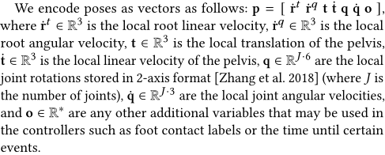
To normalize this pose vector we subtract the mean and then compute the average standard deviation of each type of variable (e.g. linear velocities, angular velocities, translations, rotations) and divide those variables by their respective standard deviations. Next, we scale the joint rotations and angular velocities in the pose vector by the total length of the joint chain of all descendants. We found this to be a much faster-to-train alternative to including a forward kinematics loss [Andreou et al. 2022]. Finally, we include per-variable loss weights, which we tune to make all components of the pose vector contribute approximately equally to the loss at the start of training.
Our Encoder Network E, and Decoder Network D, both consist of a single hidden layer with 512 hidden units, using the ELU activation function [Clevert et al. 2016] and use an encoded latent space of size
𝑑𝑧 = 128, z = E(p), p = D(z), z ∈ R𝑑𝑧 . We train the auto-encoder for 250k iterations with a batch-size of 1024, and learning rate of 0.001 which decays linearly to zero during training. This takes ∼1 hour.
Once trained, we have a highly accurate auto-encoder that we can use to encode poses into to a compact and well-behaved space. As one final step, we normalize the encoded space of the auto-encoder using the mean and the maximum of the standard deviation across all latent dimensions. This prevents the overall scale of the latent space from affecting the training of the controllers. See Fig 6 for a visualization of the reproduction accuracy.
4.2 Latent Auto-Regressive Flow-Matching Model
FlowMatching [Liu et al. 2022], alternatively formulated as iterative 𝛼-(de)blending in Heitz et al. [2023], learns a continuous velocity field that transports samples from one distribution to another.
Specifically, we use Flow Matching to transport samples from the unit Gaussian distribution N(0, I) in the auto-encoder's latent space to samples from a conditional distribution over poses in the auto-encoder's latent space Z = {z0, z1, ..., z𝐹 }, where the condition is given by the previous pose and any control variables that may be used.
To begin, let ˜z ∼ N(0, I) ∈ R𝑑𝑧 be a sample from the unit Gaussian distribution in the auto-encoder's latent space. Let (z𝑓 , z𝑓 -1) ∼ Z be a pair of consecutive frames randomly sampled from the distribution of poses in the auto-encoder's latent space, and v𝑓 be any corresponding control variables constructed using the user provided Training Controls function (see Section 3.5).
If we define the linear interpolation between ˜z and z𝑓 for a given time 𝑡 as follows:

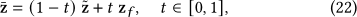
then our goal is to train a time-dependent velocity model V, called the Flow Network, that outputs 𝑑¯z 𝑑𝑡 for all 𝑓 , 𝑡 , and ˜z. To achieve this we must minimize the mean-squared error between the network's predicted velocity and the velocity from the random sample ˜z toward the target distribution sample z𝑓 :

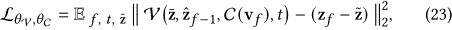
where the Flow Network V takes as input the blended sample ¯z, the previous pose with noise added ˆz𝑓 -1 (described below), the encoding of the control variables v𝑓 using the Control Encoder Network C, and the time 𝑡 . The above objective can be minimized via standard stochastic gradient descent with respect to the parameters of the Flow Network V and Control Encoder Network C together.
Since auto-regressive generation often suffers from distribution drift due to the accumulation of small errors, generation is unstable when trained only on pairs of frames (z𝑓 , z𝑓 -1). To address this, we instead train using a noised version of the previous frame ˆz𝑓 -1 - which is created by adding random Gaussian noise to previous pose z𝑓 -1, scaled by a uniform random variable 𝛼 sampled between 0 and some user-provided maximum 𝛼𝑚𝑎𝑥 . Noise augmentation has been found to be a simple and effective technique for improving the robustness of sequential policy cloning [Xie et al. 2020] and pre-training diffusion models [Chen et al. 2024a]. Compared to prior methods which use scheduled sampling [Shi et al. 2024; Zhao et al.
![Fig. 5. A diagram showing how our interactive character controllers function at runtime with an example multi-behavioral input. At each frame, user inputs (gamepads, keyboards, mice etc.) are processed by the Control Encoder Network, and passed to either (1) a Flow Network to generate the current latent pose 𝑧𝑓 conditioned on previous latent pose 𝑧𝑓 -1 and the encoded control 𝑐𝑓 ; or (2) a Projector Network to produce the next 8-frame segment of animation. Both models run auto-regressively in the latent pose space.](assets/0129-picture.png)

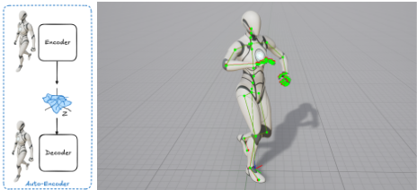
2024], and therefore incur computational overhead from running inference during training, our approach improves generation stability without extra iterative steps in the training, resulting in much faster training. We found that in certain cases results could be improved by applying similar noise to input control variables v𝑓 , however this was not essential. For a full description of the training algorithm please see Algorithm 1.
Once trained, we can randomly sample a value z from the unit Gaussian distribution N(0, I) and then numerically integrate the velocities produced by the velocity model V from 𝑡 = 0 to 𝑡 = 1 to transport it to a random sample in the desired conditional distribution over Z. In our case, a small fixed number of discrete Euler integration steps 𝑆 = 4 worked quite effectively (see Table 2). For a precise description of the inference algorithm see Algorithm 2.
Optionally, one can distill the trained Flow Network V to enable one-step inference. The distillation objective minimizes the meansquared-error between V's 𝑆-step integrated velocity prediction and a distilled version V ′ 's velocity prediction at 𝑡 = 0:

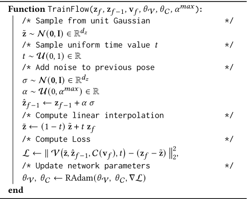
Recognized table text (check against the image)
| Function TrainFlow(z𝑓 , z𝑓 -1, v𝑓 , 𝜃V, 𝜃C, 𝛼𝑚𝑎𝑥 ): | |
|---|---|
| /* Sample from unit Gaussian ˜z ∼ N(0, I) ∈ R𝑑𝑧 | */ |
| /* Sample uniform time value 𝑡 𝑡 ∼ U(0, 1) ∈ R | */ |
| /* Add noise to previous pose 𝜎 ∼ N(0, I) ∈ R𝑑𝑧 𝛼 ∼ U(0, 𝛼𝑚𝑎𝑥 ) ∈ R | */ |
| ˆz𝑓 -1 ← z𝑓 -1 + 𝛼 𝜎 /* Compute linear interpolation ¯z ← (1 - 𝑡) ˜z + 𝑡 z𝑓 | */ |
| /* Compute Loss | */ |
| L ← ∥ V � ¯z, ˆz𝑓 -1, C(v𝑓 ), 𝑡 � - (z𝑓 - ˜z) � � 2 2, /* Update network parameters 𝜃V, 𝜃C ←RAdam(𝜃V, 𝜃C, ∇L) end | */ |

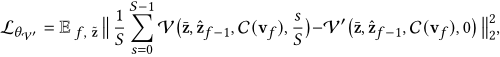
(24)
Such distillation effectively reduces the runtime cost to one network evaluation.
Our Flow Network V is similar in design to the Denoiser network in Shi et al. [2024] and consists of a Multilayer Perceptron with 8 hidden layers with 800 hidden units, using the GELU activation function [Hendrycks and Gimpel 2016], with Layer Normalization [Ba et al. 2016] placed before each internal linear layer, and skip-connections which concatenate the input to each hidden layer. We train the Flow Network for 500k iterations, with a batch-size of 4096 and a learning rate of 0.001 which decays linearly to zero over the course of training. We use a previous pose noise scale of 𝛼𝑚𝑎𝑥 = 0.25. Distillation uses the same set of hyper-parameters. Full training takes between ∼5 and ∼20 hours on an NVIDIA GeForce RTX 3080 depending on the complexity of the controller. The model begins to be usable as an interactive controller after approximately 10k iterations which generally takes 10-15 minutes. This is sufficient for iterating control-related designs as the remaining training iterations improve motion quality.

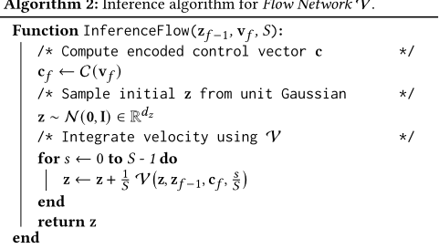
Recognized table text (check against the image)
| Function InferenceFlow(z𝑓 -1, v𝑓 , S): | |
|---|---|
| Algorithm 2: Inference algorithm for Flow Network /* Compute encoded control vector c c𝑓 ← C(v𝑓 ) | */ |
| /* Sample initial z from unit Gaussian z ∼ N(0, I) ∈ R𝑑𝑧 | */ |
| /* Integrate velocity using V for 𝑠 ← 0 to S - 1 do z ← z + 1 𝑆 V � z, z𝑓 -1, c𝑓 , 𝑠𝑆 � end return z end | */ |
4.3 Segment-Based Learned Motion Matching
Because Control Operators allow for more flexible conditioning than a simple fixed vector of feature values, the exact setup described in Holden et al. [2020] is no longer appropriate. For that reason we use an adjusted formulation, making use of the auto-encoder described in Section 4.1.
First, we sample 1,000k random examples of controls from the user-provided Training Controls Blueprint Graph and add a small amount of random noise to all of the variables. Second, we pass these controls to a user-defined Matching Function Blueprint Graph. This allows us to build pairs of control inputs v and their associated best matching frame in the database z. For a visual example of what this Matching Function looks like in Blueprints see Fig 16. For controls consisting of a simple flat vector this could also potentially be derived automatically.
For every frame matched in the database we sample a short segment of animation made up of the following 8 frames, and concatenate the encoded pose vectors z for these 8 frames together to produce one larger vector w ∈ R 8·𝑑𝑧 . This represents our final training pairs consisting of control inputs v, and associated matched Motion Segments made up of blocks of 8 frames in the encoded pose space w.
From this dataset, we train in a standard supervised fashion a Projector network P which takes as input the output of the Control Encoder Network C, and produces the associated segment of animation w. In this sense our Projector Network P acts as a combination of the Stepper and the Projector in the original paper.
Our Projector Network P, consists of a 9 hidden layers with 1536 hidden units, using the GELU activation function [Hendrycks and Gimpel 2016]. We train the Projector Network for 1,000k iterations, with a batch-size of 512, and learning rate of 0.001 which decays linearly to zero over the course of training. This takes ∼20 hours for the most complex controller on an NVIDIA GeForce RTX 3080.
Once trained, at runtime, every 8 frames, we simply evaluate the Control Encoding Network C on the user input, followed by the Projector Network P, and begin playing the next segment, using inertialization to remove any discontinuity and preserve smoothness [Bollo 2016, 2017].
We found that results could be further improved by recording the controls used during an interactive play session, sampling an additional 1,000k random control variables v from this recording, adding noise to these recorded controls, before re-matching them and appending the matched training examples to the original dataset - finally re-training the Projector Network.
5 Results
In this section we show results of our method, conditioning both controllers on controls with varying level of complexity. Readers are encouraged to watch the supplementary video for a more in-depth analysis.
Most results are shown on an internal dataset unless otherwise noted. This internal dataset consists of about 3 hours and 40 minutes of high quality optical motion capture data. This data is sampled at 60Hz and includes finger and toe motion. It is retargeted onto the character shown in the paper using MotionBuilder. It mostly consists of locomotion (walking, running, etc), including around 1.5 hours of stylized walks in roughly 30 different styles. It also includes about 30 minutes of interactions such as opening doors, sitting on a chair, picking up objects, etc - as well as jumping and dancing. For results on openly available datasets such as 100STYLE [Mason et al. 2022], and the Motorica Dance Dataset [Alexanderson et al. 2023; Valle-Pérez et al. 2021], please see supplementary video.
All results shown have two simple procedural adjustments applied. First, we use the predicted contact labels to apply some simple foot-locking and inverse kinematics which helps reduce foot sliding. Second, when we update the pose we use an interpolation between the estimated joint rotations, and the integration of the estimated joint angular velocities applied to the previous frame's joint rotations. We find that blending these estimations using a weight of 0.25 for rotations and 0.75 for integrated angular velocities was quite effective at removing residual noise from the Flow Matching process.
For a visual depiction of the control operators used in each task see Fig 17.
5.1 Uncontrolled Generation
In Fig 7 we show some results of our Flow Matching model applied to uncontrolled generation, showing the diversity of the generated results. In Fig 8 we show some analysis of the diversity of the generation of our method by visualizing root trajectories.

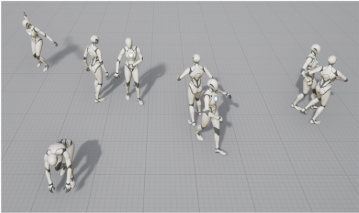

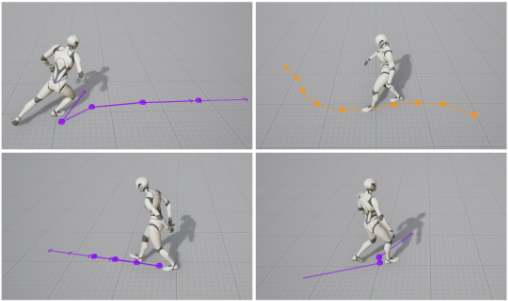

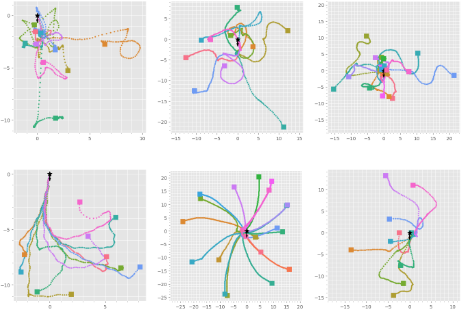
5.2 Locomotion
In Fig 9 we show some results of our method applied to locomotion generation. For additional locomotion results on the 100STYLE dataset please see supplementary video.
5.3 Interactions
In Fig 10 we show some results of our method applied to interactions including jumping to a target, sitting down and getting up from a chair, and picking up objects.
5.4 Multi-Behavior Control
In Fig 1 we show how our method can be used to train multi-behavior controllers. Here we show many of the previously shown behaviors combined into a single controller and neural network.

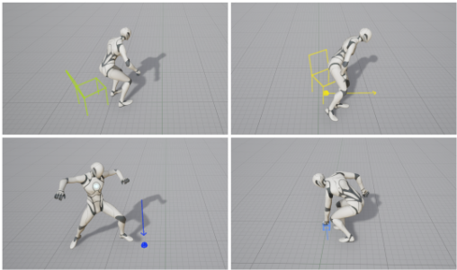
Fig. 10. Results of our method applied to interaction tasks. Top Left: Sitting Down, Top Right: Getting Up, Bottom Left: Jump to Target, Bottom Right: Pick-up Object.
6 Evaluation
We evaluate the effectiveness of our approach with a user study, an examination of the role of the Control Encoder Network, an ablation over some of the design decisions of the Flow-Matching-based model such as performing Flow Matching in the latent motion space and the use of skip connections, and an evaluation of the runtime performance and memory usage.
6.1 User Study
We conduct a user study of industry practitioners with 9 participants, consisting of 3 animation programmers, 2 technical animators / designers, 1 animation director, 2 researchers, and 1 animation QA (Quality Assurance) analyst. Expertise varied significantly across domains, with technical animators and designers tending to have strong Unreal Engine familiarity but no technical programming or machine learning expertise, and researchers having machine learning expertise but often little-to-no knowledge of Unreal Engine or Blueprints. The study thus included both technical specialists and non-technical users.

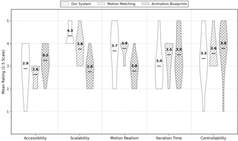
Participants were asked to complete a tutorial introducing our system's workflow (see Supplemental Material), where they created a move-to-target controller, designed the behavior using Control Operators, and trained and tested the Flow-Matching-based interactive animation controller. The tutorial also encouraged them to explore by extending the controller with customized functionality, such as adding walk/run control. After completing the tutorial, participants filled out a questionnaire rating our system on a 5-point Likert scale for accessibility, scalability, achievable motion realism, iteration time, and controllability as well as providing qualitative feedback. Iteration time here refers to how quickly users can test and refine their design during each controller development. Participants that were familiar with Motion Matching and Animation Blueprints [Unreal 2022a], both machine-learning (ML) free methods, were asked to compare these to the provided system on the aforementioned criteria.
Despite their varied backgrounds, all participants were able to successfully complete the tutorial and build functioning move-totarget controllers with a reported average time taken of roughly 1.5 hours (excluding model training time). Participants rated the difficulty of following the tutorial as relatively low (mean of 1.9/5) and rated their confidence at building another controller using the same system as 3.1/5.
As shown in Fig 11 users rate our system competitively across all measured metrics, particularly in terms of scalability which is a main strength compared to non-machine-learning-based alternatives. Users rated our system's accessibility better than Motion Matching and comparable to Animation Blueprints. Motion realism was rated as similar to Motion Matching and better than Animation Blueprints. The controllability and iteration time ratings do not show significant variations across methods.
The similar iteration time ratings across different systems reflect that once set up, all kinds of controllers take similar amounts of time to tweak and refine. Nonetheless, when asked how long it would take to build a comparable controller from scratch using either Animation Blueprints or Motion Matching (with access to tutorials and data), participants generally estimated several days of work as opposed to a few hours using our ML-based system, although responses had wide variation. This also reflects that for all systems achieving high-quality output still demands multiple iterations as the parameters of the systems and the controls provided can affect the results.
Qualitative feedback highlighted several strengths and weaknesses of our system. Multiple participants emphasized its flexibility and accessibility, with responses noting it is "very flexible and easy to design controllers for varied tasks", "possible to create models without deeply understood machine learning concepts", "no need for programming. Even people with non-technical background can also handle it with sufficient training". Participants also mentioned the efficiency with comments such as "you get a long way (to a working but unpolished result) with comparatively little work after the data is captured and tagged". One participant stated it would be their "preferred method of producing an animation system for high fidelity human motion in most scenarios".
When asked how it compared to other machine-learning systems, feedback on Control Operators was positive: "I can see that this system has the benefit of 1) being integrated into an engine, 2) being modular and easily extensible and 3) supporting different types of goals and not being specific to one type of control or goal.", "It is more technical than systems like the text-to-animation prompting tools, but less technical than the majority of systems that are only available as code or papers."
Participants also identified limitations, primarily centered around aspects of the workflow. Some users had doubts over the ability to fine tune the system: "it seems not as directly tunable as animation blueprints or motion matching (when hitting a problem, we can't just dig into the Neural Network to find the cause)", however the most frequently mentioned concern was the training time, with one representative response pointing out that "although this is one-time, during development if there is a logical error in the controller, it could be 5 hours before you realize". As this is a common limitation across almost all machine-learning-based methods, more discussion on ideas to tackle this limitation are included in Section 7.
For the full set of quantitative results, the tutorial document itself, and a time-lapse showing the process involved in completing the tutorial, please see the additional supplementary material.
6.2 Control Encoder Network
To evaluate the impact of the Control Encoder Network we perform three experiments. First, we compare our method to using a handcrafted control vector. Second, we examine how the Control Encoder Network represents different controls in its encoding space. Finally, we run an experiment to assess generalization capabilities.
6.2.1 Hand-crafted Control Vector. In this experiment we remove the Control Encoder Network and design a hand-crafted control vector for use in the multi-behavior task which includes all the possible variables plus one-hot encodings of flags to indicate the exact configuration of variables provided and in what combinations.

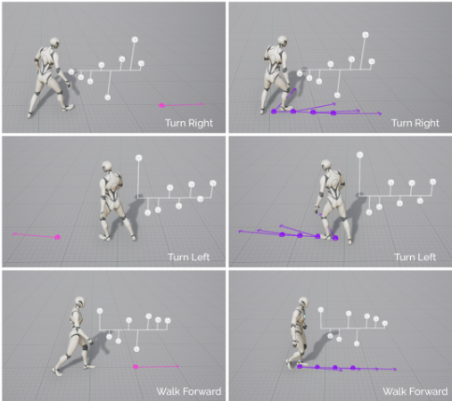
We find that the hand-crafted control vector performs similarly to the Control Encoder Network, with perhaps slightly reduced motion quality. This small reduction in quality might be explained by the removal of the extra weight matrices and transformations introduced by the Control Encoder Network. In this sense we find that Control Operators do not necessarily provide better quality than carefully hand-crafted control vectors - they simply abstract the design in a way that makes it accessible to non-technical users.
6.2.2 Control Encoding. Next, we train a controller to perform both the Move To Target task, and the Trajectory Following task, using the Encode operator to encode the final control vector as an 8-dimensional vector. Our hypothesis is that the Control Encoder Network can learn to map both Trajectory Following and Move To Target control inputs to a similar encoding, allowing it to re-use the core Flow Network for both tasks. To test this we visualize the result for different control inputs. We find that controls which imply similar motions, e.g. a trajectory turning to the left vs a target placed to the left of the character, map to similar representations in the encoded control space. See Fig 12 for details.
6.2.3 Generalization. In the final experiment, we again train a controller to perform both the Move To Target task, and the Trajectory Following task, however we also include a one-hot control variable to indicate the locomotion style and train on stylized locomotion data. We observe that even though the system is only trained on the Move To Target task using the Neural style, because it is also trained on the Trajectory Following task with multiple styles, it is capable of generalizing and performing Move To Target in a stylized way. This shows the Control Encoder Network can learn to generalize between tasks - a distinct advantage over training individual networks per-task. See Fig 13 for more details.

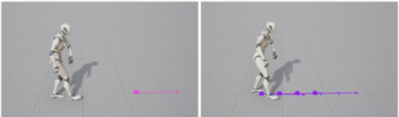
6.3 Ablations
In this section we quantitatively evaluate motion artifacts including foot sliding, ground penetration distance and frequency, and jitteriness. Foot sliding is measured as the average distance per frame each toe joint moves when the predicted contact label is active. The contact label is active in the ground truth when the speed of the toe joint is below 20 cm/s, and the height is below 20cm. Ground penetrations for the toe and heel are quantified by the average penetration distance per frame as well as the penetration frequency, which represents the percentage of frames where the joint falls below the penetration height threshold. This threshold is calibrated to ensure close-to-zero penetration in clean ground truth data, accounting for discrepancies between the joint location and the skinned mesh. Jitteriness is quantified by the average magnitude of the per-frame accelerations of the joint positions, which empirically correlate well with the visual jitteriness of the motion.
As well as measuring these quantities for our proposed method we ablate three aspects of our method. First, the use of Layer Normalization [Ba et al. 2016] in the network structure. Second, removing the auto-encoder and performing Flow Matching in the raw pose space, and third, removing skip connections from the flow network. In all cases we run the evaluation over uncontrolled generation. For numerical results please see Table 1.
6.3.1 Layer Normalization. As shown in Table 1, we found that Layer Normalization did improve the quality and stability of our controller, however we did not find it was essential to a functioning controller, and the improvement in quality and stability was somewhat marginal.
6.3.2 Pose-Space Flow-Matching. In this experiment we trained the Flow Matching model on the raw pose vectors p, normalized using the per-dimension mean and standard deviation computed across the training dataset.
We observed that on our internal dataset, the auto-regressively generated motion sometimes became unstable and could explode when going far out-of-distribution. In the cases where it remained stable, the motions are of lower quality compared to the latent model, as shown in Table 1. We also observed that the stable generations tended to be limited to locomotion, and were prone to "die out"
![Table 1. Evaluations of common motion artifacts. We compare the performance of our method, Latent Auto-Regressive Flow-Matching (LAFM), to versions with the following components removed: Layer Normalization (LayerNorm), the Auto-Encoder Latent space (Latent), and Skip-Connections (Skip). This comparison is performed on our Internal Dataset, and the 100STYLE dataset. Statistics were computed from 100 randomly selected frames, each used to generate 20 auto-regressive rollouts lasting 20 seconds, starting from that initial frame. Measurements are taken without procedural adjustments applied.](assets/0202-table.png)
Recognized table text (check against the image)
| F. S.(cm) ↓ | Jitteriness (cm/s 2 ) ↓ | Toe pen. (cm) ↓ | Toe pen. freq. % ↓ | Heel pen. (cm) ↓ | Heel pen. freq.% ↓ | |
|---|---|---|---|---|---|---|
| Internal Dataset | ||||||
| Ground Truth | 0.091 ± 0.027 | 0.167 ± 0.095 | 0.007 ± 0.027 | 0.434 ± 1.404 | 0.001 ± 0.007 | 0.085 ± 0.484 |
| LAFM | 0.249 ± 0.071 | 0.330 ± 0.111 | 0.003 ± 0.008 | 0.245 ± 0.650 | 0.001 ± 0.003 | 0.096 ± 0.249 |
| w/o LayerNorm | 0.285 ± 0.053 | 0.439 ± 0.070 | 0.003 ± 0.008 | 0.243 ± 0.603 | 0.001 ± 0.003 | 0.077 ± 0.177 |
| w/o Skip | 0.532 ± 0.195 | 0.912 ± 0.415 | 0.040 ± 0.051 | 1.763 ± 2.014 | 0.016 ± 0.020 | 0.933 ± 1.016 |
| w/o Latent | 0.960 ± 0.658 | 2.792 ± 2.163 | 1.638 ± 1.528 | 24.471 ± 21.590 | 1.047 ± 1.006 | 18.795 ± 16.883 |
| 100STYLE | ||||||
| Ground Truth | 0.064 ± 0.018 | 0.152 ± 0.090 | 0.000 ± 0.001 | 0.011 ± 0.075 | 0.000 ± 0.001 | 0.013 ± 0.104 |
| LAFM | 0.212 ± 0.052 | 0.467 ± 0.119 | 0.000 ± 0.001 | 0.104 ± 0.214 | 0.001 ± 0.002 | 0.219 ± 0.488 |
| w/o LayerNorm | 0.285 ± 0.073 | 0.737 ± 0.339 | 0.015 ± 0.052 | 0.807 ± 2.830 | 0.008 ± 0.025 | 0.508 ± 0.996 |
| w/o Skip | 0.478 ± 0.115 | 1.038 ± 0.192 | 0.001 ± 0.003 | 0.054 ± 0.126 | 0.002 ± 0.011 | 0.372 ± 1.752 |
| w/o Latent | 0.191 ± 0.059 | 0.381 ± 0.179 | 0.026 ± 0.062 | 0.664 ± 1.342 | 0.017 ± 0.036 | 0.657 ± 1.218 |

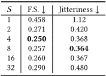
Recognized table text (check against the image)
| 𝑆 | F.S. ↓ | Jitteriness ↓ |
|---|---|---|
| 1 | 0.458 | 1.12 |
| 2 | 0.271 | 0.420 |
| 4 | 0.250 | 0.368 |
| 8 | 0.257 | 0.364 |
| 16 | 0.260 | 0.367 |
| 32 | 0.290 | 0.480 |

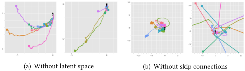
quickly; as demonstrated in Fig 14 (a), most samples ended up in a standing pose and thus stopped early. On the contrary, the latent Flow Matching model can generate good quality and diverse motions not limited to locomotion, for as long as needed.
If trained with a larger network (e.g. 10 layers, 1024 neurons), we did see an improvement on the generation stability, while the other issues persist with a slight improvement. This suggests that the latent encoding may help with the expressiveness when using a lightweight Flow Matching network. This is consistent with the hypothesis in Rombach et. al. [2021] that latent encoding can compress perceptual details and therefore the diffusion model (in our case the FlowMatching model) requires less capacity as it focuses on only semantic compression.
We also note that while previous work [Chen et al. 2024b; Shi et al. 2024] has shown more success in the pose-space, one possible reason why we might not have been able to produce as good results on the internal dataset is that our pose-space is considerably larger than in previous work, containing finger joints and additional information that may be difficult to model effectively. For example, we found that on the 100STYLE dataset, which does not contain finger joints, the use of the latent space was far less impactful for achieving high quality results, and for certain metrics even performed slightly worse.
6.3.3 Skip-Connections. We found that removing skip-connections made our results considerably more noisy and unstable. Fig 14(b) shows sample trajectories generated using a Flow Matching model without skip-connections. The motions sometimes either drift or explode.
6.4 Performance
In Table 3 we evaluate the performance of our controllers in terms of CPU and memory cost. All networks are evaluated on the CPU. All performance measures were taken single-threaded on an AMD Ryzen Threadripper PRO 3995WX 64-Cores 2.7 Ghz. In general we find that the memory and CPU impact of the Control Encoder Network is minimal compared to the Flow Network or Projector Network.
7 Discussion & Limitations
Learned Motion Matching and Auto-Regressive Flow-Matching each have distinctive benefits and limitations. A key difference between the two is that Learned Motion Matching does not try to interpolate or extrapolate from the training data. The advantage here is that it sticks more closely to what was provided during training, while the disadvantage is that it cannot adapt as well to slight variations in the desired control variables such as speed changes. Auto-Regressive Flow-Matching can feel more responsive too as it changes based on control variables every frame, while Learned Motion Matching may only respond every 8 frames. From the standpoint of a game designer or animator, we find Auto-Regressive Flow-Matching to be simpler to set up as it does not require a user-defined Matching Function and has fewer variables and parameters to tweak. However, this is at the expense of some controllability. Auto-Regressive Flow-Matching handles much better the case of under-specified controls, where Learned Motion Matching can end up jumping between many different parts of the data and does not produce a balanced variety of animations. Finally, while our version of Learned Motion Matching has a relatively high performance cost every 8 frames, Auto-Regressive Flow-Matching has a slightly lower performance cost that is paid every frame for inference.

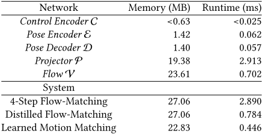
Recognized table text (check against the image)
| Network | Memory (MB) | Runtime (ms) |
|---|---|---|
| Control Encoder C | <0.63 | <0.025 |
| Pose Encoder E | 1.42 | 0.062 |
| Pose Decoder D | 1.40 | 0.057 |
| Projector P | 19.38 | 2.913 |
| Flow V | 23.61 | 0.702 |
| System | ||
| 4-Step Flow-Matching | 27.06 | 2.890 |
| Distilled Flow-Matching | 27.06 | 0.784 |
| Learned Motion Matching | 22.83 | 0.446 |
When the character is stationary, the FlowMatching model still exhibits some residual noise in the output, even with the proposed procedural adjustments. We also find that both models can occasionally struggle when there is poor data coverage. In such scenarios, the Motion Matching model performs better, but the Flow Matching model can sporadically get stuck in a situation where the character floats or remain stationary when provided with control inputs outside of the training data, e.g., a trajectory which is moving too fast or a target location which is not in the training data.
Although Control Operators allow users to effectively describe the inputs to a Motion Generation Model, they do not address other aspects of training machine-learning-based character controllers such as custom loss functions, data pre-and-post-processing, and multi-stage training setups.
As shown in Section 6.1, iteration time remains a problem shared by all machine-learning-based methods. However, we found there are several design choices in our implementation that can help here. First, we carefully choose a set of default hyper-parameters which we keep fixed (including for all results shown in this paper) and limit our system to simple network architectures. Second, we allow interactive testing during training. Training starts to produce noisy yet responsive motion in under 15 minutes, which provides a preview of resulting controller that the user can iterate on. Finally, we
ACM Trans. Graph., Vol. 44, No. 6, Article 231. Publication date: December 2025.
allow users to examine and curate the training data before training to help avoid data-based mistakes before training.
Faster iteration can also be enabled by only retraining the control encoder network. During our experiments we observed that a distilled Flow Matching model can also be conditioned via the initial noise sample, rather than via concatenating the encoded control vector. It is therefore possible to use an uncontrolled FlowMatching controller as a kind of generative prior over all possible frame-toframe transitions and have the Control Encoder Network output the initial noise sample distribution instead. Using this setup we found it is possible to reuse the Flow Network between controllers, and retrain only the lightweight Control Encoder Network, allowing for quick training of new behaviors in just a couple of minutes. Specifically, we first train a Flow Network for uncontrolled generation as described in Section 5.1, and then freeze its weights. For each new behavior, we build a corresponding Control Encoder Network, whose output can be interpreted as the mean and log-standard deviation of the initial random sample ˜z. We then optimize the encoder's parameters using the same FlowMatching loss. At the start of training, the controller produces random motion samples; after only a few updates (as few as one for a simple trajectory-following controller), the Control Encoder Network learns to generate initial samples that follow the control inputs. It is worth noting, however, that training a complex multi-behavior controller (such as the Uber controller) with this approach yields lower accuracy and stability compared to the original end-to-end version, likely due to the lack of guarantees for a well-structured initial noise sample space. We include some preliminary result from this experiment in the supplementary video.
A key part of building character controllers for video games is the management of responsiveness and "game feel". An interesting extension to Control Operators would be to provide a framework for linking the properties of the desired movement model to the produced animation, giving designers precise control over key aspects of the movement such as accelerations, response times, and movement speeds.
8 Conclusion
We have introduced Control Operators, a method for designing the control of neural-network-based interactive character controllers. We demonstrated its potential using two current state-of-the-art character controllers, showing that our method allows designers to build controllers that can readily perform multiple different behaviors via a number of different control mechanisms within realistic runtime budgets.
In the future, we expect that Control Operators could also be applied in many other domains such as physics-based character animation and more generally we expect that in order to make further inroads into the industry, it will become increasingly important to develop abstractions that enable designers and non-technical users to leverage learning-based systems without needing expertise in neural networks. Control Operators are a first step along this path.
Acknowledgments
We thank all participants of our user study for their valuable time and feedback.
References
Shailen Agrawal and Michiel van de Panne. 2016. Task-based locomotion. ACM Trans. Graph. 35, 4, Article 82 (July 2016), 11 pages. https://doi.org/10.1145/2897824. 2925893
Simon Alexanderson, Rajmund Nagy, Jonas Beskow, and Gustav Eje Henter. 2023. Listen, Denoise, Action! Audio-Driven Motion Synthesis with Diffusion Models. ACMTrans. Graph. 42, 4, Article 44 (2023), 20 pages. https://doi.org/10.1145/3592458
N. Andreou, A. Aristidou, and Y. Chrysanthou. 2022. Pose Representations for Deep Skeletal Animation. Computer Graphics Forum 41, 8 (2022), 155-167. https://doi.org/ 10.1111/cgf.14632 arXiv:https://onlinelibrary.wiley.com/doi/pdf/10.1111/cgf.14632
Tenglong Ao, Zeyi Zhang, and Libin Liu. 2023. GestureDiffuCLIP: Gesture Diffusion Model with CLIP Latents. ACM Trans. Graph. (2023), 18 pages. https://doi.org/10. 1145/3592097
Lei Jimmy Ba, Jamie Ryan Kiros, and Geoffrey E. Hinton. 2016. Layer Normalization. CoRR abs/1607.06450 (2016). arXiv:1607.06450 http://arxiv.org/abs/1607.06450
Florent Bocquelet, Boris Oreshkin, Felix Harvey, Louis-Simon Ménard, Dominic Laflamme, Bay Raitt, and Jeremy Cowles. 2022. AI and Physics Assisted Character Pose Authoring. In ACM SIGGRAPH 2022 Real-Time Live! (Vancouver, BC, Canada) (SIGGRAPH '22). Association for Computing Machinery, New York, NY, USA, Article 3, 2 pages. https://doi.org/10.1145/3532833.3538680
David Bollo. 2016. Inertialization: High-Performance Animation Transitions in 'Gears of War'. In Proc. of GDC 2018.
David Bollo. 2017. High Performance Animation in Gears of War 4. In ACM SIGGRAPH 2017 Talks (Los Angeles, California) (SIGGRAPH '17). ACM, New York, NY, USA, Article 22, 2 pages. https://doi.org/10.1145/3084363.3085069
Michael Büttner. 2019. Machine Learning for Motion Synthesis and Character Control in Games. In Proc. of i3D 2019.
Michael Büttner and Simon Clavet. 2015. Motion Matching - The Road to Next Gen Animation. In Proc. of Nucl.ai 2015. https://www.youtube.com/watch?v= z_wpgHFSWss&t=658s
Cascadeur. 2023. Cascadeur. https://cascadeur.com/
Hao Chen, Yujin Han, Diganta Misra, Xiang Li, Kai Hu, Difan Zou, Masashi Sugiyama, Jindong Wang, and Bhiksha Raj. 2024a. Slight Corruption in Pre-training Data Makes Better Diffusion Models. arXiv:2405.20494 [cs.CV] https://arxiv.org/abs/2405.20494
Rui Chen, Mingyi Shi, Shaoli Huang, Ping Tan, Taku Komura, and Xuelin Chen. 2024b. Taming Diffusion Probabilistic Models for Character Control. In ACM SIGGRAPH 2024 Conference Papers (Denver, CO, USA) (SIGGRAPH '24). Association for Computing Machinery, New York, NY, USA, Article 67, 10 pages. https: //doi.org/10.1145/3641519.3657440
Xin Chen, Biao Jiang, Wen Liu, Zilong Huang, Bin Fu, Tao Chen, Jingyi Yu, and Gang Yu. 2023. Executing Your Commands via Motion Diffusion in Latent Space. https: //doi.org/10.48550/arXiv.2212.04048 arXiv:2212.04048
Kyungmin Cho, Chaelin Kim, Jungjin Park, Joonkyu Park, and Junyong Noh. 2021. Motion recommendation for online character control. ACM Trans. Graph. 40, 6, Article 196 (Dec. 2021), 16 pages. https://doi.org/10.1145/3478513.3480512
Simon Clavet. 2016. Motion Matching and The Road to Next-Gen Animation. In Proc. of GDC 2016.
Djork-Arné Clevert, Thomas Unterthiner, and Sepp Hochreiter. 2016. Fast and Accurate Deep Network Learning by Exponential Linear Units (ELUs). In 4th International Conference on Learning Representations, ICLR 2016, San Juan, Puerto Rico, May 2-4, 2016, Conference Track Proceedings, Yoshua Bengio and Yann LeCun (Eds.). http: //arxiv.org/abs/1511.07289
Setareh Cohan, Guy Tevet, Daniele Reda, Xue Bin Peng, and Michiel van de Panne. 2024. Flexible Motion In-betweening with Diffusion Models. In ACM SIGGRAPH 2024 Conference Papers (Denver, CO, USA) (SIGGRAPH '24). Association for Computing Machinery, NewYork, NY, USA, Article 69, 9 pages. https://doi.org/10.1145/3641519. 3657414
Wenxun Dai, Ling-Hao Chen, Jingbo Wang, Jinpeng Liu, Bo Dai, and Yansong Tang. 2024. MotionLCM: Real-time Controllable Motion Generation via Latent Consistency Model. arXiv:2404.19759 [cs]
Zhiyang Dou, Xuelin Chen, Qingnan Fan, Taku Komura, and Wenping Wang. 2023. C·ASE: Learning Conditional Adversarial Skill Embeddings for Physics-based Characters. In SIGGRAPH Asia 2023 Conference Papers (Sydney, NSW, Australia) (SA '23). Association for Computing Machinery, New York, NY, USA, Article 2, 11 pages. https://doi.org/10.1145/3610548.3618205
Philipp Dufter, Martin Schmitt, and Hinrich Schütze. 2021. Position Information in Transformers: An Overview. CoRR abs/2102.11090 (2021). arXiv:2102.11090 https: //arxiv.org/abs/2102.11090
Katerina Fragkiadaki, Sergey Levine, and Jitendra Malik. 2015. Recurrent Network Models for Kinematic Tracking. CoRR abs/1508.00271 (2015). arXiv:1508.00271 http://arxiv.org/abs/1508.00271
Kevin Frans, Danijar Hafner, Sergey Levine, and Pieter Abbeel. 2024. One Step Diffusion via Shortcut Models. arXiv:2410.12557 [cs.LG] https://arxiv.org/abs/2410.12557
Chuan Guo, Shihao Zou, Xinxin Zuo, Sen Wang, Wei Ji, Xingyu Li, and Li Cheng. 2022. Generating Diverse and Natural 3D Human Motions From Text. In Proceedings of the IEEE/CVF Conference on Computer Vision and Pattern Recognition (CVPR). 5152-5161.
Rachel Heck and Michael Gleicher. 2007. Parametric Motion Graphs. In Proceedings of the 2007 Symposium on Interactive 3D Graphics and Games (Seattle, Washington) (I3D '07). ACM, New York, NY, USA, 129-136. https://doi.org/10.1145/1230100.1230123
Nicolas Heess, Dhruva TB, Srinivasan Sriram, Jay Lemmon, Josh Merel, Greg Wayne, Yuval Tassa, Tom Erez, Ziyu Wang, S. M. Ali Eslami, Martin A. Riedmiller, and David Silver. 2017. Emergence of Locomotion Behaviours in Rich Environments. CoRR abs/1707.02286 (2017). arXiv:1707.02286 http://arxiv.org/abs/1707.02286
Eric Heitz, Laurent Belcour, and Thomas Chambon. 2023. Iterative 𝛼-(de)Blending: A Minimalist Deterministic Diffusion Model. In Special Interest Group on Computer Graphics and Interactive Techniques Conference Conference Proceedings. 1-8. https: //doi.org/10.1145/3588432.3591540 arXiv:2305.03486 [cs]
Dan Hendrycks and Kevin Gimpel. 2016. Bridging Nonlinearities and Stochastic Regularizers with Gaussian Error Linear Units. CoRR abs/1606.08415 (2016). arXiv:1606.08415 http://arxiv.org/abs/1606.08415
Gustav Eje Henter, Simon Alexanderson, and Jonas Beskow. 2019. MoGlow: Probabilistic and controllable motion synthesis using normalising flows. CoRR abs/1905.06598 (2019). arXiv:1905.06598 http://arxiv.org/abs/1905.06598
Jonathan Ho, Ajay Jain, and Pieter Abbeel. 2020. Denoising diffusion probabilistic models. In Proceedings of the 34th International Conference on Neural Information Processing Systems (Vancouver, BC, Canada) (NIPS '20). Curran Associates Inc., Red Hook, NY, USA, Article 574, 12 pages.
Daniel Holden. 2018. Character Control with Neural Networks and Machine Learning. In Proc. of GDC 2018.
Daniel Holden, Oussama Kanoun, Maksym Perepichka, and Tiberiu Popa. 2020. Learned motion matching. ACM Trans. Graph. 39, 4, Article 53 (Aug. 2020), 13 pages. https: //doi.org/10.1145/3386569.3392440
Daniel Holden, Taku Komura, and Jun Saito. 2017. Phase-functioned Neural Networks for Character Control. ACM Trans. Graph. 36, 4, Article 42 (July 2017), 13 pages. https://doi.org/10.1145/3072959.3073663
Seokpyo Hong, Daseong Han, Kyungmin Cho, Joseph S. Shin, and Junyong Noh. 2019. Physics-based full-body soccer motion control for dribbling and shooting. ACM Trans. Graph. 38, 4, Article 74 (July 2019), 12 pages. https://doi.org/10.1145/3306346. 3322963
Kyunglyul Hyun, Kyungho Lee, and Jehee Lee. 2016. Motion Grammars for Character Animation. Computer Graphics Forum 35 (2016). https://api.semanticscholar.org/ CorpusID:3469961
Tobias Kleanthous and Antonio Martini. 2023. Learning Robust and Scalable Motion Matching with Lipschitz Continuity and Sparse Mixture of Experts. In Proceedings of the 16th ACM SIGGRAPH Conference on Motion, Interaction and Games (Rennes, France) (MIG '23). Association for Computing Machinery, New York, NY, USA, Article 1, 13 pages. https://doi.org/10.1145/3623264.3624442
Lucas Kovar, Michael Gleicher, and Frédéric Pighin. 2002. Motion Graphs. In Proceedings of the 29th Annual Conference on Computer Graphics and Interactive Techniques (San Antonio, Texas) (SIGGRAPH '02). ACM, New York, NY, USA, 473-482. https: //doi.org/10.1145/566570.566605
Jehee Lee, Jinxiang Chai, Paul S. A. Reitsma, Jessica K. Hodgins, and Nancy S. Pollard. 2002. Interactive control of avatars animated with human motion data. ACM Trans. Graph. 21, 3 (July 2002), 491-500. https://doi.org/10.1145/566654.566607
Kyungho Lee, Seyoung Lee, and Jehee Lee. 2018. Interactive Character Animation by Learning Multi-objective Control. ACM Trans. Graph. 37, 6, Article 180 (Dec. 2018), 10 pages. https://doi.org/10.1145/3272127.3275071
Sunmin Lee, Sebastian Starke, Yuting Ye, JungdamWon, and Alexander Winkler. 2023. QuestEnvSim: Environment-Aware Simulated Motion Tracking from Sparse Sensors. In ACM SIGGRAPH 2023 Conference Proceedings (Los Angeles, CA, USA) (SIGGRAPH '23). Association for Computing Machinery, New York, NY, USA, Article 62, 9 pages. https://doi.org/10.1145/3588432.3591504
Yongjoon Lee, Kevin Wampler, Gilbert Bernstein, Jovan Popović, and Zoran Popović. 2010. Motion Fields for Interactive Character Locomotion. In ACM SIGGRAPH Asia 2010 Papers (Seoul, South Korea) (SIGGRAPH ASIA '10). ACM, New York, NY, USA, Article 138, 8 pages. https://doi.org/10.1145/1866158.1866160
Sergey Levine, Jack M. Wang, Alexis Haraux, Zoran Popović, and Vladlen Koltun. 2012. Continuous Character Control with Low-dimensional Embeddings. ACM Trans. Graph. 31, 4, Article 28 (July 2012), 10 pages. https://doi.org/10.1145/2185520. 2185524
Peizhuo Li, Kfir Aberman, Zihan Zhang, Rana Hanocka, and Olga Sorkine-Hornung. 2022. GANimator: Neural Motion Synthesis from a Single Sequence. ACM Transactions on Graphics (TOG) 41, 4 (2022), 138.
Peizhuo Li, Sebastian Starke, Yuting Ye, and Olga Sorkine-Hornung. 2024. WalkTheDog: Cross-Morphology Motion Alignment via Phase Manifolds. In ACM SIGGRAPH 2024 Conference Papers (Denver, CO, USA) (SIGGRAPH '24). Association for Computing Machinery, New York, NY, USA, Article 70, 10 pages. https://doi.org/10.1145/ 3641519.3657508
Tianyu Li, Calvin Qiao, Guanqiao Ren, KangKang Yin, and Sehoon Ha. 2023b. AAMDM: Accelerated Auto-regressive Motion Diffusion Model. https://doi.org/10.48550/ arXiv.2401.06146 arXiv:2401.06146 [cs]
Weiyu Li, Xuelin Chen, Peizhuo Li, Olga Sorkine-Hornung, and Baoquan Chen. 2023a. Example-based Motion Synthesis via Generative Motion Matching. ACM Transactions on Graphics (TOG) 42, 4, Article 94 (2023). https://doi.org/10.1145/3592395
Hung Yu Ling, Fabio Zinno, George Cheng, and Michiel van de Panne. 2020. Character Controllers Using Motion VAEs. ACM Trans. Graph. 39, 4 (2020).
Yaron Lipman, Ricky T. Q. Chen, Heli Ben-Hamu, Maximilian Nickel, and Matthew Le. 2023. FlowMatching for Generative Modeling. In The Eleventh International Conference on Learning Representations. https://openreview.net/forum?id=PqvMRDCJT9t
Libin Liu and Jessica Hodgins. 2017. Learning to Schedule Control Fragments for Physics-Based Characters Using Deep Q-Learning. ACM Trans. Graph. 36, 4, Article 42a (July 2017), 14 pages. https://doi.org/10.1145/3072959.3083723
Libin Liu and Jessica Hodgins. 2018. Learning basketball dribbling skills using trajectory optimization and deep reinforcement learning. ACM Trans. Graph. 37, 4, Article 142 (July 2018), 14 pages. https://doi.org/10.1145/3197517.3201315
Xingchao Liu, Chengyue Gong, and Qiang Liu. 2022. Flow Straight and Fast: Learning to Generate and Transfer Data with Rectified Flow. arXiv:2209.03003 [cs.LG] https://arxiv.org/abs/2209.03003
Matthew Loper, Naureen Mahmood, Javier Romero, Gerard Pons-Moll, and Michael J. Black. 2015. SMPL: A Skinned Multi-Person Linear Model. ACM Trans. Graphics (Proc. SIGGRAPH Asia) 34, 6 (Oct. 2015), 248:1-248:16.
Ying-Sheng Luo, Jonathan Hans Soeseno, Trista Pei-Chun Chen, and Wei-Chao Chen. 2020. CARL: controllable agent with reinforcement learning for quadruped locomotion. ACM Trans. Graph. 39, 4, Article 38 (Aug. 2020), 10 pages. https: //doi.org/10.1145/3386569.3392433
Naureen Mahmood, Nima Ghorbani, Nikolaus F. Troje, Gerard Pons-Moll, and Michael J. Black. 2019. AMASS: Archive of Motion Capture as Surface Shapes. In International Conference on Computer Vision. 5442-5451.
Julieta Martinez, Michael J. Black, and Javier Romero. 2017. On human motion prediction using recurrent neural networks. CoRR abs/1705.02445 (2017). arXiv:1705.02445 http://arxiv.org/abs/1705.02445
Ian Mason, Sebastian Starke, and Taku Komura. 2022. Real-Time Style Modelling of Human Locomotion via Feature-Wise Transformations and Local Motion Phases. Proceedings of the ACM on Computer Graphics and Interactive Techniques 5, 1, Article 6 (may 2022). https://doi.org/10.1145/3522618
Josh Merel, Saran Tunyasuvunakool, Arun Ahuja, Yuval Tassa, Leonard Hasenclever, Vu Pham, Tom Erez, Greg Wayne, and Nicolas Heess. 2020. Catch & Carry: reusable neural controllers for vision-guided whole-body tasks. ACM Trans. Graph. 39, 4, Article 39 (Aug. 2020), 14 pages. https://doi.org/10.1145/3386569.3392474
Jianyuan Min and Jinxiang Chai. 2012. Motion Graphs++: A Compact Generative Model for Semantic Motion Analysis and Synthesis. ACM Trans. Graph. 31, 6, Article 153 (Nov. 2012), 12 pages. https://doi.org/10.1145/2366145.2366172
Kourosh Naderi, Joose Rajamäki, and Perttu Hämäläinen. 2017. Discovering and synthesizing humanoid climbing movements. ACM Trans. Graph. 36, 4, Article 43 (July 2017), 11 pages. https://doi.org/10.1145/3072959.3073707
Kenzo Nonami, Ranjit Kumar Barai, Addie Irawan, and Mohd Razali Daud. 2014. Historical and Modern Perspective of Walking Robots. 19-40. https://doi.org/10.1007/9784-431-54349-7_2
Boris N. Oreshkin, Antonios Valkanas, Felix G. Harvey, Louis-Simon Menard, Florent Bocquelet, and Mark J. Coates. 2024. Motion In-Betweening via Deep Δ-Interpolator . IEEE Transactions on Visualization & Computer Graphics 30, 08 (Aug. 2024), 56935704. https://doi.org/10.1109/TVCG.2023.3309107
Soohwan Park, Hoseok Ryu, Seyoung Lee, Sunmin Lee, and Jehee Lee. 2019. Learning Predict-and-Simulate Policies From Unorganized Human Motion Data. ACM Trans. Graph. 38, 6, Article 205 (2019).
Sang Il Park, Hyun Joon Shin, and Sung Yong Shin. 2002. On-line locomotion generation based on motion blending. In Proceedings of the 2002 ACM SIGGRAPH/Eurographics Symposium on Computer Animation (San Antonio, Texas) (SCA '02). Association for Computing Machinery, New York, NY, USA, 105-111. https://doi.org/10.1145/ 545261.545279
Dario Pavllo, Christoph Feichtenhofer, Michael Auli, and David Grangier. 2019. Modeling Human Motion with Quaternion-based Neural Networks. CoRR abs/1901.07677 (2019). arXiv:1901.07677 http://arxiv.org/abs/1901.07677
Dario Pavllo, David Grangier, and Michael Auli. 2018. QuaterNet: A Quaternion-based Recurrent Model for Human Motion. CoRR abs/1805.06485 (2018). arXiv:1805.06485 http://arxiv.org/abs/1805.06485
Xue Bin Peng, Glen Berseth, Kangkang Yin, and Michiel Van De Panne. 2017. DeepLoco: Dynamic Locomotion Skills Using Hierarchical Deep Reinforcement Learning. ACM Trans. Graph. 36, 4, Article 41 (July 2017), 13 pages. https://doi.org/10.1145/3072959. 3073602
Xue Bin Peng, Ze Ma, Pieter Abbeel, Sergey Levine, and Angjoo Kanazawa. 2021. AMP: adversarial motion priors for stylized physics-based character control. ACM Trans. Graph. 40, 4, Article 144 (July 2021), 20 pages. https://doi.org/10.1145/3450626. 3459670
Xue Bin Peng and Michiel van de Panne. 2017. Learning Locomotion Skills Using DeepRL: Does the Choice of Action Space Matter?. In Proceedings of the
ACM SIGGRAPH / Eurographics Symposium on Computer Animation (Los Angeles, California) (SCA '17). ACM, New York, NY, USA, Article 12, 13 pages. https: //doi.org/10.1145/3099564.3099567
Zhongfei Qing, Zhongang Cai, Zhitao Yang, and Lei Yang. 2023. Story-to-Motion: Synthesizing Infinite and Controllable Character Animation from Long Text. In SIGGRAPH Asia 2023 Technical Communications (Sydney, NSW, Australia) (SA '23). Association for Computing Machinery, New York, NY, USA, Article 28, 4 pages. https://doi.org/10.1145/3610543.3626176
Alec Radford, Jong Wook Kim, Chris Hallacy, Aditya Ramesh, Gabriel Goh, Sandhini Agarwal, Girish Sastry, Amanda Askell, Pamela Mishkin, Jack Clark, Gretchen Krueger, and Ilya Sutskever. 2021. Learning Transferable Visual Models From Natural Language Supervision. In Proceedings of the 38th International Conference on Machine Learning, ICML 2021, 18-24 July 2021, Virtual Event (Proceedings of Machine Learning Research, Vol. 139), Marina Meila and Tong Zhang (Eds.). PMLR, 8748-8763. http://proceedings.mlr.press/v139/radford21a.html
Robin Rombach, Andreas Blattmann, Dominik Lorenz, Patrick Esser, and Björn Ommer. 2021. High-Resolution Image Synthesis with Latent Diffusion Models. arXiv:2112.10752 [cs.CV]
Charles Rose, Michael F. Cohen, and Bobby Bodenheimer. 1998. Verbs and Adverbs: Multidimensional Motion Interpolation. IEEE Comput. Graph. Appl. 18, 5 (Sept. 1998), 32-40. https://doi.org/10.1109/38.708559
David Wong Ryan Cardinal, Luke Shier. 2022. FIFA 22's' Hypermotion: Full-Match Mocap Driving Machine Learning Technology. In Proc. of GDC 2022.
Alla Safonova and Jessica K. Hodgins. 2007. Construction and Optimal Search of Interpolated Motion Graphs. In ACM SIGGRAPH 2007 Papers (San Diego, California) (SIGGRAPH '07). ACM, New York, NY, USA, Article 106. https://doi.org/10.1145/ 1275808.1276510
Yi Shi, Jingbo Wang, Xuekun Jiang, Bingkun Lin, Bo Dai, and Xue Bin Peng. 2024. Interactive Character Control with Auto-Regressive Motion Diffusion Models. ACM Trans. Graph. 43 (jul 2024).
Hyun Joon Shin and Hyun Seok Oh. 2006. Fat Graphs: Constructing an Interactive Character with Continuous Controls. In Proceedings of the 2006 ACM SIGGRAPH/Eurographics Symposium on Computer Animation (Vienna, Austria) (SCA '06). Eurographics Association, Goslar, DEU, 291-298.
Jiaming Song, Chenlin Meng, and Stefano Ermon. 2021. Denoising Diffusion Implicit Models. In 9th International Conference on Learning Representations, ICLR 2021, Virtual Event, Austria, May 3-7, 2021. OpenReview.net. https://openreview.net/ forum?id=St1giarCHLP
Sebastian Starke, Ian Mason, and Taku Komura. 2022. DeepPhase: periodic autoencoders for learning motion phase manifolds. ACM Trans. Graph. 41, 4, Article 136 (July 2022), 13 pages. https://doi.org/10.1145/3528223.3530178
Sebastian Starke, Paul Starke, Nicky He, Taku Komura, and Yuting Ye. 2024. Categorical Codebook Matching for Embodied Character Controllers. ACM Trans. Graph. 43, 4, Article 142 (July 2024), 14 pages. https://doi.org/10.1145/3658209
Sebastian Starke, He Zhang, Taku Komura, and Jun Saito. 2019. Neural state machine for character-scene interactions. ACM Trans. Graph. 38, 6, Article 209 (Nov. 2019), 14 pages. https://doi.org/10.1145/3355089.3356505
Sebastian Starke, Yiwei Zhao, Taku Komura, and Kazi Zaman. 2020. Local motion phases for learning multi-contact character movements. ACM Trans. Graph. 39, 4, Article 54 (Aug. 2020), 14 pages. https://doi.org/10.1145/3386569.3392450
Sebastian Starke, Yiwei Zhao, Fabio Zinno, and Taku Komura. 2021. Neural animation layering for synthesizing martial arts movements. ACM Trans. Graph. 40, 4, Article 92 (July 2021), 16 pages. https://doi.org/10.1145/3450626.3459881
Haowen Sun, Ruikun Zheng, Haibin Huang, Chongyang Ma, Hui Huang, and Ruizhen Hu. 2024. LGTM: Local-to-Global Text-Driven Human Motion Diffusion Model. In ACM SIGGRAPH 2024 Conference Papers (Denver, CO, USA) (SIGGRAPH '24). Association for Computing Machinery, New York, NY, USA, Article 66, 9 pages. https://doi.org/10.1145/3641519.3657422
Lingfeng Sun, Haichao Zhang, Wei Xu, and Masayoshi Tomizuka. 2022. PaCo: Parameter-Compositional Multi-task Reinforcement Learning. In Advances in Neural Information Processing Systems, Alice H. Oh, Alekh Agarwal, Danielle Belgrave, and Kyunghyun Cho (Eds.). https://openreview.net/forum?id=LYXTPNWJLr
Vanessa Tan, Junghyun Nam, Juhan Nam, and Junyong Noh. 2023. Motion to Dance Music Generation using Latent Diffusion Model. In SIGGRAPH Asia 2023 Technical Communications (Sydney, NSW, Australia) (SA '23). Association for Computing Machinery, New York, NY, USA, Article 5, 4 pages. https://doi.org/10.1145/3610543. 3626164
Chen Tessler, Yunrong Guo, Ofir Nabati, Gal Chechik, and Xue Bin Peng. 2024. MaskedMimic: Unified Physics-Based Character Control Through Masked Motion Inpainting. ACM Transactions on Graphics (TOG) (2024).
Chen Tessler, Yoni Kasten, Yunrong Guo, Shie Mannor, Gal Chechik, and Xue Bin Peng. 2023. CALM: Conditional Adversarial Latent Models for Directable Virtual Characters. In ACM SIGGRAPH 2023 Conference Proceedings (Los Angeles, CA, USA) (SIGGRAPH '23). Association for Computing Machinery, New York, NY, USA, Article 37, 9 pages. https://doi.org/10.1145/3588432.3591541
Guy Tevet, Sigal Raab, Brian Gordon, Yoni Shafir, Daniel Cohen-or, and Amit Haim Bermano. 2023. Human Motion Diffusion Model. In The Eleventh International Conference on Learning Representations. https://openreview.net/forum?id=SJ1kSyO2jwu
Adrien Treuille, Yongjoon Lee, and Zoran Popović. 2007. Near-Optimal Character Animation with Continuous Control. In ACM SIGGRAPH 2007 Papers (San Diego, California) (SIGGRAPH '07). Association for Computing Machinery, New York, NY, USA, 7-es. https://doi.org/10.1145/1275808.1276386
Unreal. 2022a. Animation Blueprints. https://dev.epicgames.com/documentation/enus/unreal- engine/animation-blueprints- in-unreal- engine
Unreal. 2022b. Blueprints Visual Scripting. https://dev.epicgames.com/documentation/ en-us/unreal- engine/blueprints-visual- scripting- in-unreal- engine
Guillermo Valle-Pérez, Gustav Eje Henter, Jonas Beskow, Andre Holzapfel, Pierre-Yves Oudeyer, and Simon Alexanderson. 2021. Transflower: Probabilistic Autoregressive Dance Generation with Multimodal Attention. ACM Trans. Graph. 40, 6, Article 195 (2021), 14 pages. https://doi.org/10.1145/3478513.3480570
Ashish Vaswani, Noam Shazeer, Niki Parmar, Jakob Uszkoreit, Llion Jones, Aidan N Gomez, Łukasz Kaiser, and Illia Polosukhin. 2017. Attention is All you Need. In Advances in Neural Information Processing Systems, I. Guyon, U. Von Luxburg, S. Bengio, H. Wallach, R. Fergus, S. Vishwanathan, and R. Garnett (Eds.), Vol. 30. Curran Associates, Inc. https://proceedings.neurips.cc/paper_files/paper/2017/file/ 3f5ee243547dee91fbd053c1c4a845aa-Paper.pdf
Jack M. Wang, David J. Fleet, and Aaron Hertzmann. 2008. Gaussian Process Dynamical Models for Human Motion. IEEE Trans. Pattern Anal. Mach. Intell. 30, 2 (Feb. 2008), 283-298. https://doi.org/10.1109/TPAMI.2007.1167
Zhiyong Wang, Jinxiang Chai, and Shihong Xia. 2021. Combining Recurrent Neural Networks and Adversarial Training for Human Motion Synthesis and Control. IEEE Transactions on Visualization and Computer Graphics 27, 1 (2021), 14-28. https: //doi.org/10.1109/TVCG.2019.2938520
Zhaoming Xie, Patrick Clary, Jeremy Dao, Pedro Morais, Jonanthan Hurst, and Michiel van de Panne. 2020. Learning Locomotion Skills for Cassie: Iterative Design and Simto-Real. In Proceedings of the Conference on Robot Learning (Proceedings of Machine Learning Research, Vol. 100), Leslie Pack Kaelbling, Danica Kragic, and Komei Sugiura (Eds.). PMLR, 317-329. https://proceedings.mlr.press/v100/xie20a.html
Pei Xu, Xiumin Shang, Victor Zordan, and Ioannis Karamouzas. 2023a. Composite Motion Learning with Task Control. ACM Trans. Graph. 42, 4, Article 93 (July 2023), 16 pages. https://doi.org/10.1145/3592447
Pei Xu, Kaixiang Xie, Sheldon Andrews, Paul G. Kry, Michael Neff, Morgan Mcguire, Ioannis Karamouzas, and Victor Zordan. 2023b. AdaptNet: Policy Adaptation for Physics-Based Character Control. ACM Trans. Graph. 42, 6, Article 177 (Dec. 2023), 17 pages. https://doi.org/10.1145/3618375
Heyuan Yao, Zhenhua Song, Baoquan Chen, and Libin Liu. 2022. ControlVAE: ModelBased Learning of Generative Controllers for Physics-Based Characters. ACM Trans. Graph. 41, 6, Article 183 (Nov. 2022), 16 pages. https://doi.org/10.1145/3550454. 3555434
Heyuan Yao, Zhenhua Song, Yuyang Zhou, Tenglong Ao, Baoquan Chen, and Libin Liu. 2024. MoConVQ: Unified Physics-Based Motion Control via Scalable Discrete Representations. ACM Trans. Graph. 43, 4, Article 144 (July 2024), 21 pages. https: //doi.org/10.1145/3658137
He Zhang, Sebastian Starke, Taku Komura, and Jun Saito. 2018. Mode-adaptive neural networks for quadruped motion control. ACM Trans. Graph. 37, 4, Article 145 (July 2018), 11 pages. https://doi.org/10.1145/3197517.3201366
Haotian Zhang, Ye Yuan, Viktor Makoviychuk, Yunrong Guo, Sanja Fidler, Xue Bin Peng, and Kayvon Fatahalian. 2023b. Learning Physically Simulated Tennis Skills from Broadcast Videos. ACM Trans. Graph. 42, 4, Article 95 (jul 2023), 14 pages. https://doi.org/10.1145/3592408
Mingyuan Zhang, Zhongang Cai, Liang Pan, Fangzhou Hong, Xinying Guo, Lei Yang, and Ziwei Liu. 2022. MotionDiffuse: Text-Driven Human Motion Generation with Diffusion Model. https://doi.org/10.48550/arXiv.2208.15001 arXiv:2208.15001
Zihan Zhang, Richard Liu, Kfir Aberman, and Rana Hanocka. 2023a. TEDi: TemporallyEntangled Diffusion for Long-TermMotion Synthesis. https://doi.org/10.48550/ arXiv.2307.15042 arXiv:2307.15042 [cs]
Kaifeng Zhao, Gen Li, and Siyu Tang. 2024. DART: A Diffusion-Based Autoregressive MotionModel for Real-Time Text-DrivenMotion Control. https://doi.org/10.48550/ arXiv.2410.05260 arXiv:2410.05260 [cs]
Yi Zhou, Connelly Barnes, Jingwan Lu, Jimei Yang, and Hao Li. 2018. On the Continuity of Rotation Representations in Neural Networks. CoRR abs/1812.07035 (2018). arXiv:1812.07035 http://arxiv.org/abs/1812.07035
Qingxu Zhu, He Zhang, Mengting Lan, and Lei Han. 2023b. Neural Categorical Priors for Physics-Based Character Control. ACM Trans. Graph. 42, 6, Article 178 (Dec. 2023), 16 pages. https://doi.org/10.1145/3618397
Wentao Zhu, Xiaoxuan Ma, Dongwoo Ro, Hai Ci, Jinlu Zhang, Jiaxin Shi, Feng Gao, Qi Tian, and Yizhou Wang. 2023a. Human motion generation: A survey. IEEE Transactions on Pattern Analysis and Machine Intelligence (2023).
Fabio Zinno. 2019. ML Tutorial Day: From Motion Matching to Motion Synthesis, and All the Hurdles In Between. In Proc. of GDC 2019.

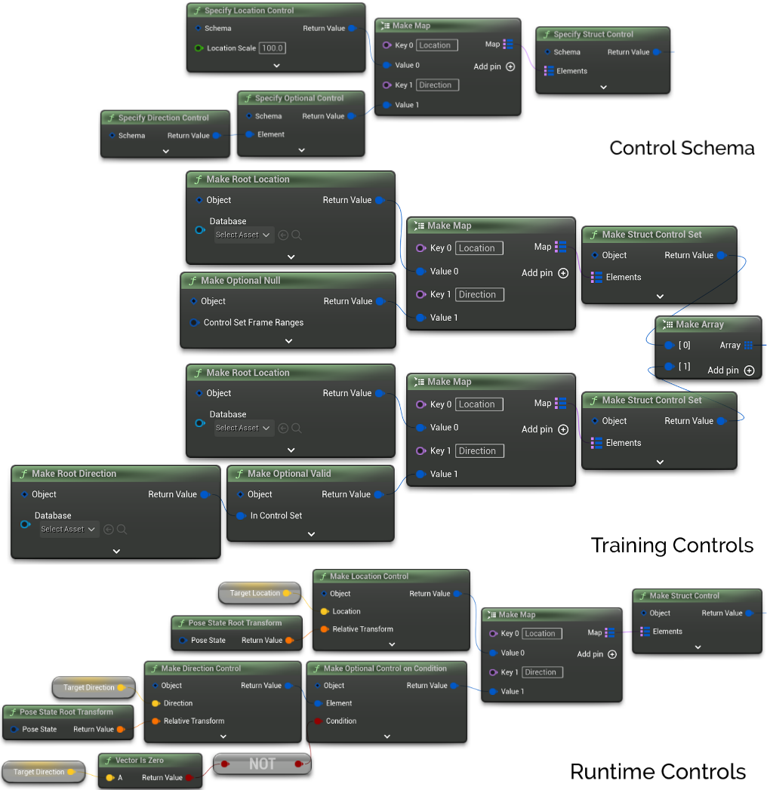
ACM Trans. Graph., Vol. 44, No. 6, Article 231. Publication date: December 2025.

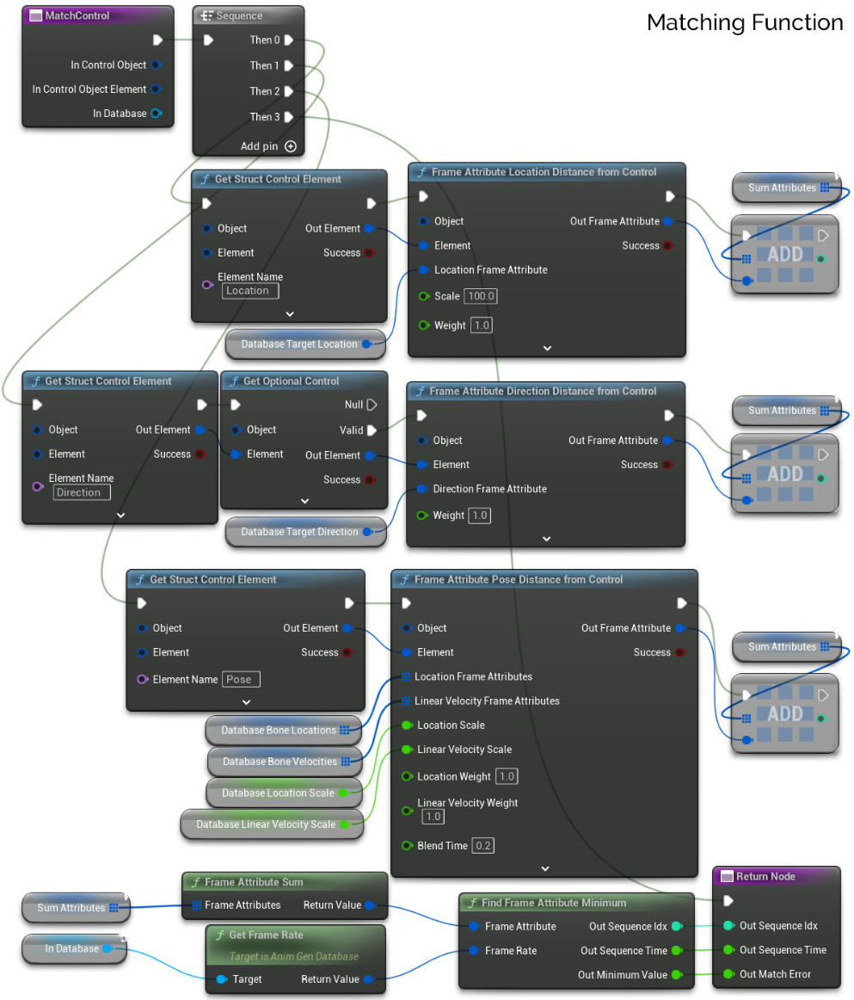
ACM Trans. Graph., Vol. 44, No. 6, Article 231. Publication date: December 2025.
,

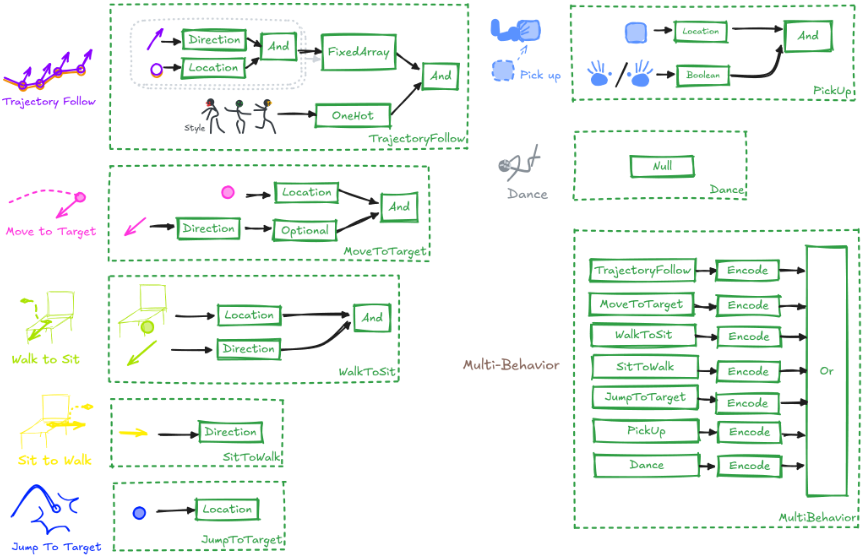